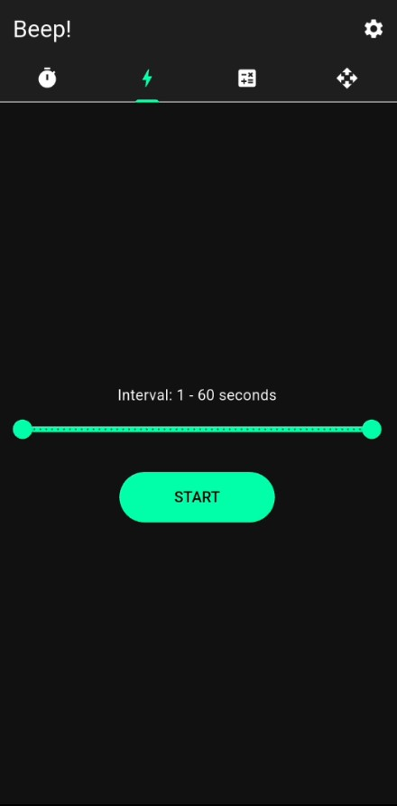
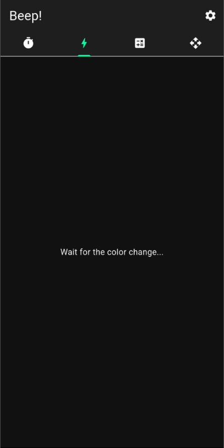
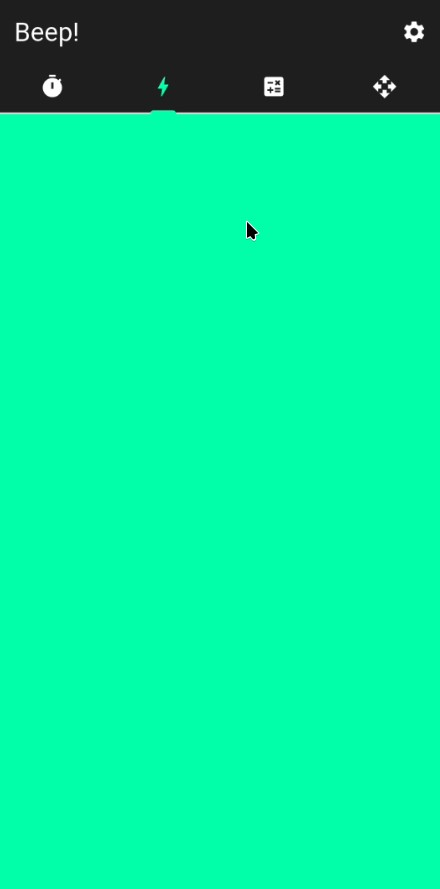
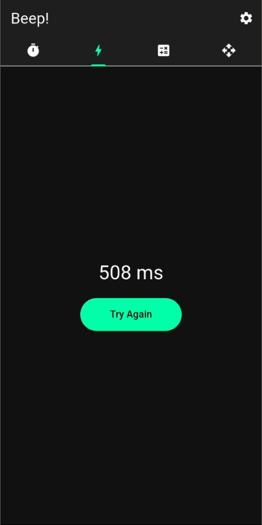
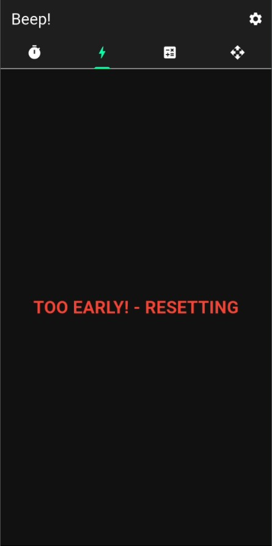

تایمر تصویری (تغییر رنگ) ⚡️
سنجش و ارتقای سرعت واکنش دیداری با مکانیزم فوقسریع کالیبراسیون بر حسب میلیثانیه؛ چشمهات رو به یک رادار شکار محرکهای ناگهانی تبدیل کن!

تنظیم بازه تصادفی فلاش نور (Interval Setup)
تمرینات چشمی ردیابی و واکنش، زمانی اثربخش هستند که هیچ ایده یا حدسی درباره زمان وقوع محرک نداشته باشی. در اولین قدم، با اسلایدر نئونی اختصاصی، پنجره تاخیر سیستم را به صورت رندوم (مثلاً ۱ تا ۶۰ ثانیه) پیادهسازی میکنی. سیستم پس از شروع، یک ثانیه کاملاً شانسی از درون این بازه بیرون میکشد تا شانس هرگونه حدسزدن یا پیشبینیِ ریتمیک از سیستم عصبی تو سلب بشه.
- محدوده گسترده (1 - 60s): دستت برای به چالش کشیدنِ صبر، تمرکز بلندمدت و استقامت ذهنی کاملاً بازه.
- استارت نئونی: فشردن کلید START سیستم را وارد فاز پردازش پنهان زمانبندی میکند.

فاز تعلیق؛ انتظار فعال برای انفجار رنگ (Wait)
بلافاصله پس از استارت، صفحه نمایش کاملاً تاریک شده و پیام "Wait for the color change..." ظاهر میشه. این بخش، فاز تعلیق هست؛ جایی که کورتکس مغز تو در بالاترین سطح آمادگی قرار داره. ثانیهها به صورت پنهانی میگذرند و تو باید بدون پلکزدن، آماده باشی تا به محض تغییر پسزمینه، روی صفحه بکوبی!
💡 نکته علمی: این فاز دقیقاً سیستم عصبی سمپاتیک رو برای پاسخهای انفجاری و ناگهانی کالیبره میکنه و به افزایش پایداری توجه (Attention Span) کمک شایانی میکنه.

شلیک سیگنال دیداری؛ لحظه تغییر رنگ آنی
بوم! زمان پنهانیِ الگوریتم تمام میشه و کل صفحه نمایش یکپارچه به رنگ نئونی تم انتخابی تو (در اینجا سبز روشن) درمیاد. این دقیقاً همان «محرک دیداری نهایی» است. به محض دیدن این فلاش رنگی، باید سریعترین لمس یا کلیک زندگیات رو ثبت کنی. موتور کرونومتر داخلی اپلیکیشن با دقت فوقبالا از همین میکروسکانس شروع به محاسبه زمان میکند.

محاسبه دقیق رکورد بر حسب میلیثانیه
به محض اینکه روی صفحه ضربه میزنی، زمان متوقف شده و سرعت واکنش دقیق تو مثل یک مدال افتخار روی صفحه نقش میبنده (مثلاً 508 ms). هدف تو در تمرینات مکرر اینه که این عدد رو به زیر ۲۵۰ یا حتی ۲۰۰ میلیثانیه برسونی تا به چابکیِ یک گیمر سطح بالا یا ورزشکار حرفهای برسی. دکمه Try Again بلافاصله زمین بازی رو برای راند بعدی آماده میکنه.

سیستم ضدتقلب هوشمند (Anti-Cheat Mechanism)
میخواهی شانس خودت رو امتحان کنی و قبل از تغییر رنگ، به صورت شانسی صفحه رو لمس کنی تا رکورد بهتری ثبت کنی؟ مچت گرفته شد! موتور هوشمند بیپ به شدت روی این موضوع حساسه. اگه قبل از شلیک فلاش نئونی روی صفحه کلیک کنی، بلافاصله جریمه میشی؛ کل صفحه قرمز شده و با پیام خطای "TOO EARLY! - RESETTING" مواجه میشی و سشن جاری به طور کامل ریست میشه تا ارزش رکوردهات حفظ بشه.